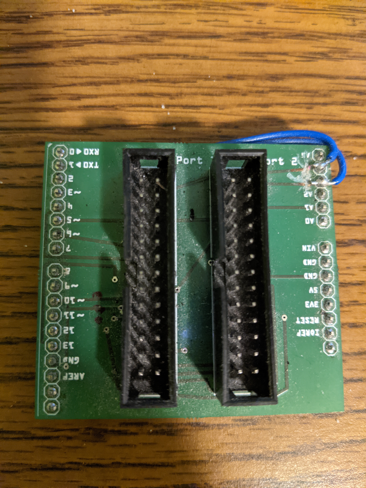

grbl4crp850
^ Parts infobox ^^
| image | Grbl4crp850r0.3.png |
| designers | [[user:tim|Timothy Schmidt]] |
| date | 2020 - 2021 |
| vitamins | |
| materials | |
| transformations | [[etching|Etching]], [[photopolymer_printing|Photopolymer printing]], [[soldering|Soldering]] |
| lifecycles | |
| tools | [[soldering_irons|Soldering irons]], [[multimeters|Multimeters]] |
| parts | [[printed_circuit_boards|Printed circuit boards]], [[solder|Solder]], [[headers|Headers]] |
| suppliers | [[https:::www.replimat.org:product:cnc-controller-avidcnc|Replimat]] |
| techniques | |
| files | [[https:::github.com:timschmidt:replimat:blob:master:src:fritzing:grbl4crp850.fzz_raw_true|grbl4crp850.fzz]] |
| git | [[https:::github.com:timschmidt:replimat|Replimat]] |
| standardinterfaces | [[arduino|Arduino]], [[parallel_port|Parallel port]] |
Introduction
A simple board to control AvidCNC equipment using Free Software. Replimat has developed and tested this against our Avid CNC 60120 Pro.
Challenges
The avid controller requires more pins than grbl provides, so grbl-Mega-5X was used instead.
Approaches
Verified as of revision 0.3: machine travel in the X, Y, Z, and mirrored axes, in positive and negative directions, as well as homing and endstop sensors.
Enabling additional functions may require some minor modifications. Unused signals have been routed to a breakout header for easy access.



The grbl4crp850 drops directly in to AvidCNC control cabinets built around the CRP850 breakout board allowing you to replace the built in EthernetSmoothStepper and Mach4 with an Arduino Mega running grbl-Mega-5x machine control firmware and your choice of host software.
Verified as of revision 0.3: machine travel in the X, Y, Z, and mirrored axes, in positive and negative directions, as well as homing and endstop sensors.
Enabling additional functions may require some minor modifications. Unused signals have been routed to a breakout header for easy access.
Making changes
This adapter PCB has been designed using the Open Source Fritzing software. Traces have been hand routed.